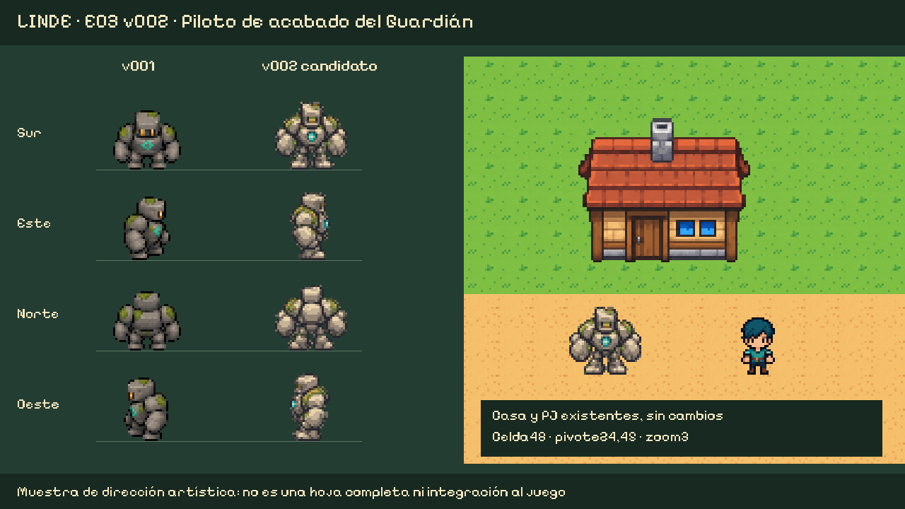

Comparación real a zoom3: v001 a la izquierda, candidato v002 en el centro; casa y PJ existentes intactos a la derecha. Muestra de reposo en cuatro direcciones; no hoja completa ni integración.
Informe y límites · Manifiesto · Fuente de la segunda pasada
